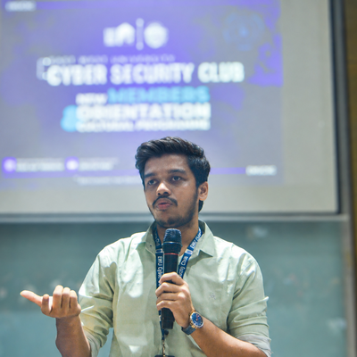

breaks systems before attackers do.
Cybersecurity researcher and penetration tester with 3+ years across offensive and defensive security — web, network & API pentesting, VAPT, bug bounty, digital forensics, incident response and blue-team operations. Finalist in 40+ global CTF competitions. Currently expanding into AI/ML for security and deepening SOC fundamentals.
About

I'm a security researcher and penetration tester based in Dhaka, Bangladesh, with three-plus years of hands-on experience across offensive and defensive cybersecurity. My work spans web, network and API penetration testing, vulnerability assessment (VAPT), digital forensics and incident response — delivered against OWASP, NIST and PTES standards.
Outside of client engagements, I compete in capture-the-flag competitions and have reached the finals of 40+ global CTF events. As Vice President – Technical at the EWU Cyber Security Club, I lead technical operations for a 750+ member community, running CTFs, workshops and mentoring the next wave of ethical hackers.
Skills
Tooling and technique across the offensive/defensive spectrum, mapped to how I actually use them in engagements.
Offensive Security
01Defensive Security
02Red Team
03Tools
04Programming
05Standards & Frameworks
06What I Do
Where I spend most of my time — from live engagements to training the next generation of hackers.
CTF Training
Coaching teammates and club members through CTF categories — web, crypto, forensics and pwn — from fundamentals to competition strategy.
Seminar
Hosting and speaking at seminars and workshops on offensive/defensive security topics for students and community members.
Pentesting
Web, network and API penetration testing engagements — from recon through exploitation to remediation-ready reporting.
Vulnerability Testing
Vulnerability assessments (VAPT) mapped against OWASP, NIST and PTES standards to surface and prioritise real risk.
Research
Independent security research — digging into new attack techniques, tooling and defensive countermeasures.
Core Strengths
Mentoring
Training
Leadership
Problem Solving
Quick Learner
Experience
- Lead technical operations for a 750+ member university cybersecurity club
- Organise CTF events, pentesting workshops and security awareness programs
- Mentor students in ethical hacking, exploit development and CTF strategies
- Designed web, forensics, crypto and pwn CTF challenges
- Successfully ran 5+ events end to end, from logistics to debriefs
- Deployed Kaspersky Endpoint Security; enforced malware, firewall, device and web control policies enterprise-wide via Security Center
- Monitored threats, performed incident response and managed patch / signature updates
- Significantly reduced endpoint vulnerability exposure across managed environments
- Conducted full-scope web, network and API pentests using OWASP Top 10, PTES and CVSS
- Discovered SQLi, XSS, CSRF, SSRF, IDOR and privilege escalation chains; delivered risk-rated reports with remediation roadmaps
- Measurably reduced attack surface for multiple enterprise clients
- Achieved 3rd place nationally; top finalist in 40+ global CTF events
- Applied DFIR techniques: evidence acquisition, log analysis and malware triage
- Performed threat analysis, network monitoring and practical cyber defense training
- Hosted security awareness sessions and promoted offensive security platforms
Certificates
Hover or click any certificate to inspect it in full view.
CTF Certificates
Certificates of participation and achievement from Capture The Flag competitions. Hover or click any certificate to inspect it in full view.
Projects
A sample of the engagements and builds behind the experience above.
EWUCSC Challenge Suite
Designed and deployed 5+ CTF events spanning web, forensics, crypto and pwn categories for a 750+ member club, including challenge authoring, scoring infra and post-event write-ups.
Enterprise Endpoint Hardening
Rolled out Kaspersky Endpoint Security across an enterprise fleet, tuning malware, firewall, device and web-control policies and cutting endpoint vulnerability exposure through active monitoring.
CTF Recon Toolkit
Built a set of Python recon and automation tools for CTF competitions, speeding up enumeration and challenge-solving workflows across web, network and forensics categories.
PC Login Activity Monitor
Developed a Python-based monitoring tool that logs and tracks login events on a personal machine, giving visibility into access attempts and usage patterns.
Hands-On Experience: Kaspersky Deployment
Hands-on deployment and administration of Kaspersky Endpoint Security across an enterprise fleet via Security Center — configuring malware, firewall, device-control and web-control policies, and managing patch / signature rollouts.
Corporate Experience
Placeholder demo cards — replace with real corporate engagement details.
Software Solution Team [Intern]
Deployed and managed Kaspersky Endpoint Security policies, monitored threats and incidents, maintained updates, and reduced endpoint security risks across enterprise environments.
Corporate Engagement Two
Placeholder description for a corporate engagement. Replace this text with the client, scope and outcome of the work.
Corporate Engagement Three
Placeholder description for a corporate engagement. Replace this text with the client, scope and outcome of the work.
Achievements
Hover or click any achievement to inspect it in full view.
Workshops & Training
Sessions I've hosted as organiser, and sessions where I've joined as a guest.
Hosted & Organised
As a Guest
Problem Solving
Platforms where I sharpen offensive and defensive skills outside of client engagements.
Get In Touch
Open to security research, pentesting engagements and collaboration. Reach out directly.